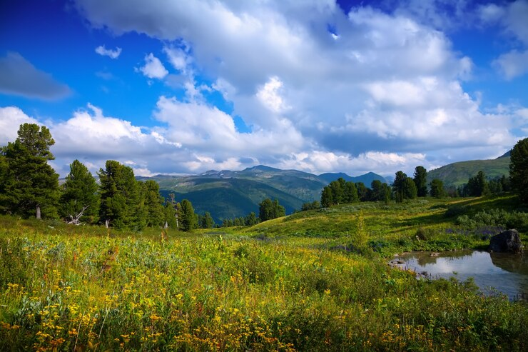
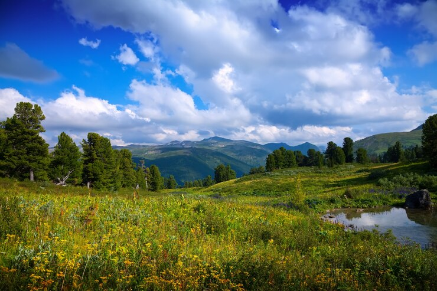

Список
Нумерованные списки
- Ann
- Nick
- Jon
Маркированный список
Веб-разработчик
- Frontend-разработчик
- Backend-разработчик
- Fullstack-разработчик
- html
- css
- javaScript
- SQL
- PHP
Список моих увлечений:
- Футбол
- Информатика
- Велоспорт
Эту страницу я сделала на занятии в учебном центре Дельфа
За три года обучения я изучу следующие технологии:
- HTML и CSS
- javaScript
- PHP
- Утро
- Зарядка
- Завтрак
- Созвон с командой
- День
- Прогулка
- Обед
- Вечер
- Чтение
- Ужин
Абсолютная ссылка


Относительные ссылки
 
ссылка на магазин
перейти на info.html

ссылка на магазин
перейти на info.html